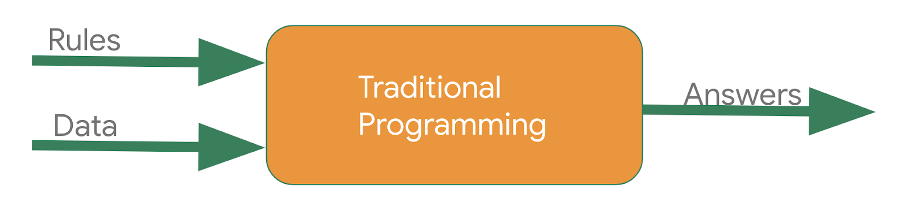

What You'll Learn
In this codelab you'll learn the basic "Hello World" of machine learning where, instead of programming explicit rules in a language such as Java or C++, you'll build a system that is trained on data to infer the rules that determine a relationship between numbers.
Consider the following problem: You're building a system that performs activity recognition for fitness tracking. You might have access to the speed at which a person is moving, and attempt to infer their activity based on this speed using a conditional:

if speed < 4:
status = WALKING
You could extend this to running with another condition:

if speed < 4:
status = WALKING
else:
status = RUNNING
In a final condition you could similarly detect cycling:
if speed < 4:
status = WALKING
else if speed < 12:
status = RUNNING
else
status = BIKING
Now consider what happens when you want to include an activity like golf? Suddenly it's less obvious how to create a rule to determine the activity.

# Now what?? :(
It's extremely difficult to write a program (expressed in code) that will give us the golfing activity. So what do you do? That's where machine learning can be used to solve the problem!
In the previous section you saw a problem where, when trying to determine the fitness activity of a user, you hit limitations in what you could write code to achieve.
Consider building applications in the traditional manner as represented in the following diagram:

You express rules in a programming language. These act on data and your program provides answers. In the case of the activity detection, the rules (the code you wrote to define types of activities) acted upon the data (the person's movement speed) in order to find an answer – the return value from the function for determining the activity status of the user (whether they were walking, running, biking, etc.).
The process for detecting this activity status via Machine Learning is very similar – only the axes are different:

Instead of trying to define the rules and express them in a programming language, you provide the answers (typically called labels) along with the data, and the machine will infer the rules that determine the relationship between the answers and the data. For example, our activity detection scenario might look like this in a machine learning context:

We gather lots of data, and label it to effectively say "This is what walking looks like", "This is what running looks like" etc. Then, the computer can infer the rules that determine, from the data, what the distinct patterns that denote a particular activity are.
Beyond being an alternative method to programming this scenario, this also gives you the ability to open up new scenarios, such as the golfing one that may not have been possible under the rules-based traditional programming approach.
In traditional programming your code compiles into a binary that is typically called a program. In machine learning, the item you create from the data and labels is called a model.
So if we go back to this diagram:

Consider the result of this to be a model, which at runtime is used like this:
You will pass the model some data, and the model will use the rules it inferred from the training to come up with a prediction – i.e. "That data looks like walking", "That data looks like biking" etc.
In the next section you'll start coding, building a very simple "Hello World" model which will have most of the building blocks that can be used in any Machine Learning Scenario!
To include code snippets you can do a few things.
- Inline highlighting can be done using the tiny tick mark on your keyboard: "`"
- Embedded code
JavaScript
{
key1: "string",
key2: integer,
key3: "string"
}
Java
for (statement 1; statement 2; statement 3) {
// code block to be executed
}
Images

Checkout the official documentation here: Codelab Formatting Guide